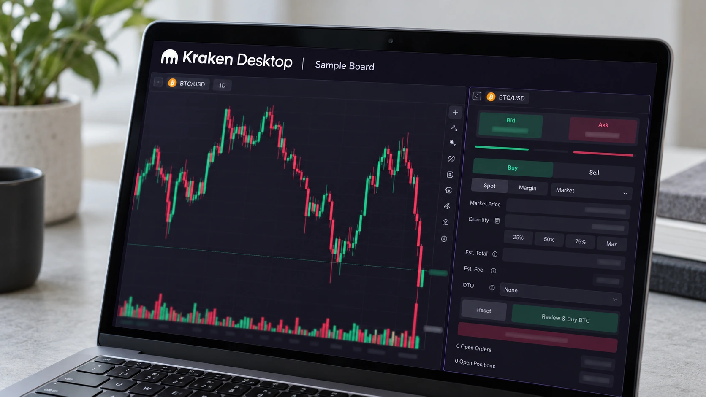

Kraken Parent’s U.S. Hyperliquid Futures Plan Takes a Testnet Step, With Approval Still Pending
Hyperliquid confirmed Payward’s intended role and outlined optional account restrictions. The proposed U.S. offering has no announced launch date or approval.

Hyperliquid has confirmed plans for Kraken parent Payward to become the first CFTC-regulated operator deploying markets through its proposed permissioned framework, adding a technical step toward U.S. onchain perpetual futures. The initial functionality is available on a test network. The production upgrade and Payward's offering are still ahead, with regulatory approval required and no launch date announced.
The October 26 statement develops a plan Payward announced on September 16. Monday's news is Hyperliquid's own confirmation of the intended arrangement and its description of optional account controls. It is not the first announcement of Kraken's ambition, nor a finding that the U.S. public can now trade the proposed contracts. The distinction separates a development milestone from a financial product's actual availability.
The commercial goal is to connect blockchain-based market infrastructure with a regulated U.S. trading and clearing structure. A successful implementation would create another way to distribute derivatives, rather than simply opening unrestricted access to an existing website. Our guide to decentralized finance explains why moving financial activity into software does not remove the organizations responsible for operating a service.
The operator, broker and blockchain have different jobs
Payward's original announcement assigns the proposed markets to Bitnomial, its exchange and clearinghouse. Bitnomial would create and administer them, then handle clearing and settlement. NinjaTrader Clearing would carry customer accounts. Payward identifies these entities as regulated by the Commodity Futures Trading Commission in their respective exchange, clearing and brokerage roles, rather than treating the entire blockchain as one licensed institution.
Hyperliquid would provide the infrastructure, including an onchain order book that matches and records trading activity. Its announcement says independent market operators retain responsibility and control over their deployments. That division matters: a protocol can supply shared technology while the company offering a particular contract remains accountable for the market it operates and the customers it accepts.
Payward said only accounts onboarded by NinjaTrader and included on both its and Bitnomial's approved-account lists could trade. That is a specific access structure, not an invitation to bypass U.S. restrictions through a different interface. The final offering would still need to meet the requirements applying to its contracts and regulated entities.
Permissioning is an addition, not a network-wide conversion
Hyperliquid calls the extra functionality HIP-3*, building on its framework for markets deployed by independent operators. The proposed configuration would let an operator or designated sub-operators manage an onchain allowlist. It is optional, and Hyperliquid explicitly says existing markets remain unchanged. Monday's announcement does not mean every market on the network is becoming permissioned or regulated in the United States.
The first implementation is on testnet, with preliminary specifications open to feedback. Production support is planned for a later network upgrade. Testing can reveal whether account controls and market operations function as designed, but it does not supply regulatory permission. Conversely, the regulated status of an operator does not establish that a particular new contract has completed every step needed for launch.
Our reporting on weekend trading in stock-linked perpetuals illustrates why the contract and venue matter alongside the underlying asset. Perpetual futures provide price exposure without an ordinary expiry and can involve leverage and funding payments. They are different from buying Bitcoin outright, even where a contract references its price. Payward has not provided a final list of markets for this proposed offering.
More access would not remove trading risk
A broker, clearinghouse and controlled onboarding process change the structure through which customers trade. They do not prevent prices from moving against a leveraged position. Our explanation of leverage and liquidation sets out how losses can accelerate when collateral becomes insufficient, independently of whether the market infrastructure is centralized or blockchain-based.
The useful next milestones are a production specification, the required regulatory approvals and an actual product notice describing eligible customers, contracts and operating terms. Until those appear, the evidence supports a testnet development and a confirmed intended operator. It does not support claims of an approved U.S. launch or a guarantee about the investment value of any token.
Sources and methodology
Sources checked October 26, 2026. Company statements, reported findings and forecasts are attributed in the text. Financial and operational implications are editorial analysis.
- Hyperliquid: official announcement of HIP-3* and Payward, October 26
- Hyperliquid: public announcement channel with the complete statement
- Payward: original U.S. onchain-futures plan, September 16
- The Block: current confirmation, testnet status and regulatory conditions
- Hyperliquid: official explanation of its onchain order-book infrastructure